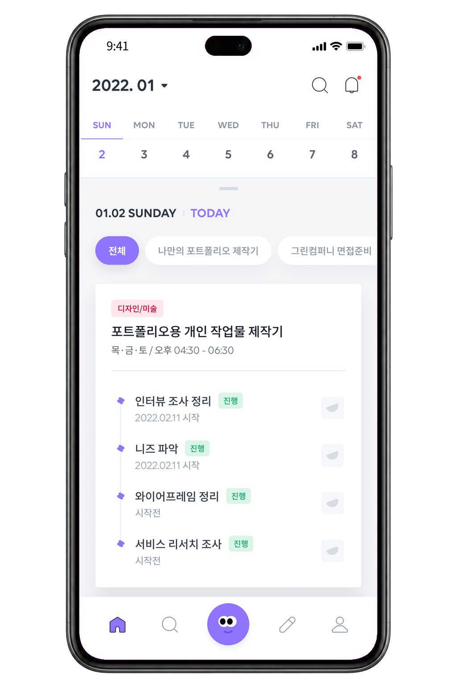
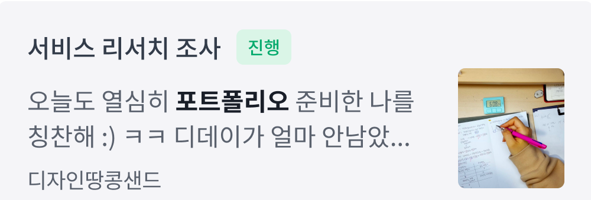
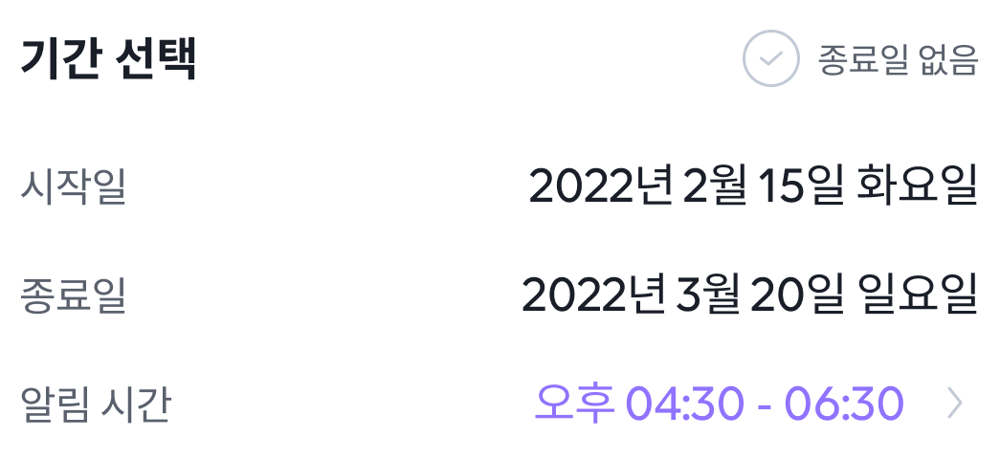
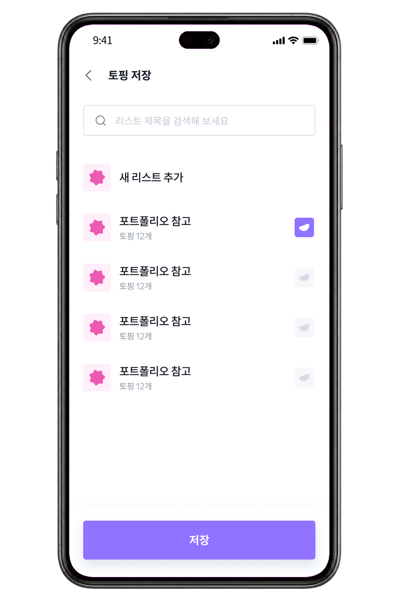
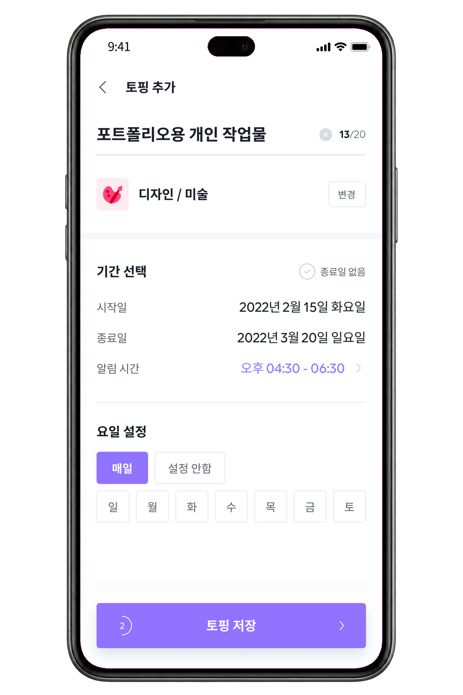
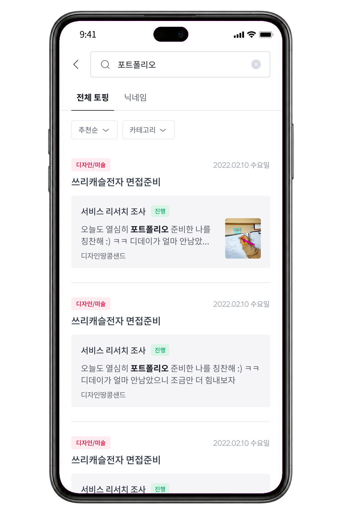

직장인 10명 중 4명
37.5%현재 직장을 다니며 이직을 준비하는 ‘퇴준생’이라고 답했습니다.
출처 · 매일경제PROJECT 01 · SERVICE PLANNING
토핑업은 다른 사람의 준비 일정을 찾아보고, 필요한 계획을 내 일정으로 가져와 실행하고 기록하는 서비스입니다.
토핑 — 포트폴리오 제작·면접 준비처럼, 하나의 목표에 필요한 기간과 세부 과제를 묶은 준비 일정

BACKGROUND
코로나19 이후 원하는 환경이 아니어도 먼저 입사하고 이직을 준비하는 사람이 늘었습니다. 공개된 조사에서 시간 부족과 일정 조율의 어려움이 반복해서 나타났습니다.
직장인 10명 중 4명
37.5%현재 직장을 다니며 이직을 준비하는 ‘퇴준생’이라고 답했습니다.
출처 · 매일경제이직 준비가 어려운 이유
이직 시도를 미룬 경험
90.8%계획은 있었지만 실제 이직 시도를 미룬 적이 있다고 답했습니다.
출처 · 매거진한경외부 통계는 문제의 배경을 이해하기 위한 자료이며, 토핑업의 출시 성과를 의미하지 않습니다.
USER RESEARCH · ABOUT 10 INTERVIEWS · 8 RECORDS CODED
취업 준비생 · UX/UI“혼자 하다 보니 피드백을 받기 어렵고, 시간 관리도 힘들어요.”
현직자 · 유치원 교사“같이 준비하는 사람이 있으면 의지가 될 텐데, 혼자 하면 자료를 얻는 것도 힘들어요.”
현직자 · 개발자“노션은 자세히 쓰면 일이 더 늘어나는 것 같아서, 일정이나 할 일을 체크하는 정도로만 써요.”
2021.10 대면 인터뷰 기록 중 발췌 · 개인정보 비식별화
약 10명을 인터뷰했고, 현재 확인 가능한 원문 8건을 다시 분류했습니다.
정보와 선택 기준 부족채용·직무 정보는 커뮤니티, 지인, SNS에 흩어져 있고 무엇을 고를지 판단하기 어려움
도구가 나뉜 일정 관리캘린더, 메모장, 노션, 수기 플래너를 가볍게 병행해 전체 준비 흐름이 이어지지 않음
혼자 지속하기 어려움업무와 병행하며 학습을 중단하거나, 피드백·동료가 없어 동기를 유지하기 어려움
INSIGHT새 계획표를 하나 더 주기보다, 다른 사람의 실제 준비 과정을 참고해 내 일정으로 바꾸는 시작점이 필요했습니다.
PROJECT GOAL
일정 관리만 해결하지 않고, 다른 사람의 준비 과정을 탐색해 내 실행 조건으로 바꾸는 흐름까지 하나의 경험으로 연결했습니다.
월간 캘린더와 오늘의 세부 과제를 한 화면에서 확인합니다.
다른 사용자의 준비 일정과 사람을 검색하고 비교합니다.
기간·반복 요일·알림을 바꿔 내 실행 일정으로 만듭니다.



SERVICE JOURNEY · DESIGN HYPOTHESIS
다른 사용자의 준비 일정(토핑)을 곧바로 내 캘린더에 넣지 않고, 먼저 리스트에 모은 뒤 필요한 것만 내 일정으로 추가해 조건을 편집합니다.
검증 전 설계 가설 빈 생성 화면보다 다른 사용자의 토핑을 먼저 탐색하게 하면 첫 준비 계획의 시작점을 제공할 수 있다고 가정했습니다.
OBJECT & STATE
토핑은 하나의 목표를 위한 준비 일정입니다. 검색에서 보관한 일정은 참고 목록에 남고, 내 일정으로 추가한 뒤에만 기간·반복·세부 과제를 편집해 실행합니다.
다른 사용자가 공개한 목표와 세부 과제 묶음
관심 있는 준비 일정을 목적별로 모아두는 곳
내 조건으로 편집되어 캘린더에 표시되는 토핑


CORE EXPERIENCE · 01
전체 토핑과 닉네임을 나눠 검색하고 추천순·카테고리로 좁힙니다. 바로 캘린더에 넣지 않고, 먼저 참고할 준비 일정을 리스트에 모읍니다.
DISCOVER → COLLECT
CORE EXPERIENCE · 02
기간·반복 요일·알림을 정한 토핑은 월간 캘린더와 오늘의 세부 과제로 연결됩니다. 설정과 실행 화면은 같은 상태·색상 규칙을 공유합니다.
CONFIGURE → RUN